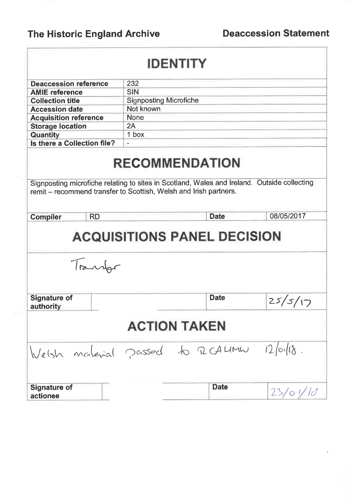

GHF-E106-R117-A1 reply attachment
Historic England deaccession statement: Signposting Microfiche (2017)

Transcript
The Historic England Archive Deaccession Statement IDENTITY | Deaccession reference 232 _AMIE reference SIN | Collection title Signposting Microfiche Accession date Not known Acquisition reference None _ _ | Storage location 2A | Quantity 1 box | _ Is there a Collection file? | - RECOMMENDATION ' Signposting microfiche relating to sites in Scotland, Wales and Ireland. Outside collecting remit — recommend transfer to Scottish, Welsh and Irish partners. _ Compiler [RD Date | 08/05/2017 ACQUISITIONS PANEL DECISION Tralee eo | pee 2/10 | ACTION TAKEN = \Velsr meleral essed dy VUCAUMY Um (Dfosfl§ Signature of | Date id, actionee | | 2/0 Vid |
Artifact description
| Catalogue ID | GHF-E106-R117-A1 |
|---|---|
| What it is | PDF document from Historic England. Attached to an email received on 27 October 2026, their reference 26/04323. 1 page. |
| From | Historic England |
| Email received | 27 October 2026 |
| Their reference | 26/04323 |
| Pages | 1 |
| File | dm Deaccession statement 233_Redacted.pdf (113 KB) |
| State | Read |
Our integration
The Historic England Archive deaccession statement for a box of "Signposting Microfiche" covering sites in Scotland, Wales and Ireland, disclosed by Historic England on 27 October 2026 (EIR reference 26/04323) with the transfer letter GHF-E106-R117-A2.
The form gives deaccession reference 232 (the disclosed file name reads 233; which is right is not checked), accession date not known, one box, and a recommendation dated 8 May 2017 to transfer the material to Scottish, Welsh and Irish partners as outside the archive's collecting remit. The covering email gives the panel decision as 25 July 2017 by the Head of Archive. The panel-decision and action-taken lines on the form are handwritten and are not legible in the machine transcript below; read them from the preview.
Open question: no itemised list of the microfiche was kept, so whether any report on Great House Farm / Tŷ Mawr was in the box is not checked.
What cuts against the case: this is a routine collecting-remit decision covering three countries, made in 2017, and the material was transferred, not destroyed.
Related: The covering email · Timeline · Disclosure Dartboard